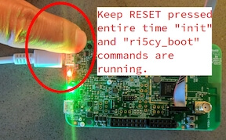

OpenISA VEGAboard
概述
VEGAboard 搭载 RV32M1 SoC，该 SoC 具有两个 RISC-V CPU、片上 XIP Flash 和全套外设，其中包括 2.4 GHz 多协议无线电。开发板还带有内置传感器和 Arduino 风格的扩展连接器。
两个 RISC-V CPU 分别名为 RI5CY 和 ZERO-RISCY，分别基于 PULP platform 的同名设计：RI5CY 和 ZERO-RISCY。RI5CY 是“主”内核，拥有更多 Flash 和 RAM，CPU 设计也更强大。ZERO-RISCY 是“从”内核，主要用作在 RI5CY 上运行的应用程序的无线协处理器。两个内核可以通过共享内存和消息外设进行通信。
目前，Zephyr 支持 RI5CY（开发板配置名称为 rv32m1_vega/openisa_rv32m1/ri5cy）和 ZERO_RISCY（开发板配置名称为 rv32m1_vega/openisa_rv32m1/zero_riscy）。
硬件
VEGAboard 具有以下功能。
RV32M1 多核 SoC：
1 MiB Flash 和 192 KiB SRAM（RI5CY 内核）
256 KiB Flash 和 128 KiB SRAM（ZERO-RISCY 内核）
低功耗模式
DMA 支持
看门狗、CRC、加密加速、ADC、DAC、比较器、定时器、PWM、RTC、I2C、UART、SPI、外部存储器、I2S、智能卡、全速 USB、uSDHC 以及 2.4 GHz 多协议无线电外设
板载传感器和外设：
32 Mbit SPI Flash 存储器
六轴加速度计、磁力计和温度传感器（FXOS8700）
环境光传感器
RGB LED
microSD 卡槽
天线接口
其他功能：
外形兼容 Arduino Uno Rev 3 扩展连接器布局（并非所有 Arduino 扩展板都引脚兼容）
通过独立的 OpenSDA 芯片实现 USB 转 UART
通过 2x5 5 mil 间距连接器（通常称为“ARM 10 针 JTAG”连接器），使用外部 JTAG 加密狗（不含）进行 RISC-V 烧录和调试
支持的功能
rv32m1_vega 开发板支持下列硬件功能。
说明
The list of supported hardware features was not generated. Run a full documentation build for the required metadata to be available.
BLE 软件链路层实验性支持
这是 Zephyr RI5CY 配置 rv32m1_vega/openisa_rv32m1/ri5cy 支持的一项实验性功能。它使用 Nordic Semi 的软件链路层框架启用片上无线电和收发器，以实现软件定义的 BLE 控制器。同时使用 Zephyr 中的控制器和主机协议栈，即可在该开发板上使用以下 BLE 示例：
beacon
central
central_hr
eddystone
hci_uart
ibeacon
peripheral_csc（骑行速度与踏频）
peripheral_dis（设备信息服务）
peripheral_esp（环境感知服务）
peripheral_hr（心率）
peripheral_ht（健康体温计）
peripheral
scan_adv
备注
BLE 软件链路层的限制：
不支持 512/256 Kbps PHY
不支持发射功率调节
连接与 IO
RV32M1 SoC 的引脚引出到 Arduino 风格的扩展连接器上。每个连接器宽 2 个引脚，与标准 Arduino 布局相比，每个排针多出一排扩展引脚。
以下各小节的表格对这些引脚进行了说明。由于这些排针上的引脚通常按逻辑功能成排分组，奇数号和偶数号引脚分别列在不同的表格中。“Port/bit”列对应 SoC PORT 和 GPIO 外设的命名方式，例如“E/13”表示 PORTE/GPIOE 引脚 13。
详情请参阅原理图和芯片参考手册。（文档可从 OpenISA GitHub releases 页面获取。）
备注
具有外设功能的引脚也可以复用为 GPIO。
Top right expansion header (J1)
奇数/底部引脚：
Pin |
Port/bit |
函数 |
|---|---|---|
1 |
E/13 |
I2S_TX_BCLK |
3 |
E/14 |
I2S_TX_FS |
5 |
E/15 |
I2S_TXD |
7 |
E/19 |
I2S_MCLK |
9 |
E/16 |
I2S_RX_BCLK |
11 |
E/21 |
SOF_OUT |
13 |
E/17 |
I2S_RX_FS |
15 |
E/18 |
I2S_RXD |
偶数/顶部引脚：
Pin |
Port/bit |
函数 |
|---|---|---|
2 |
A/25 |
UART1_RX |
4 |
A/26 |
UART1_TX |
6 |
A/27 |
GPIO |
8 |
B/13 |
PWM |
10 |
B/14 |
GPIO |
12 |
A/30 |
PWM |
14 |
A/31 |
PWM/CMP |
16 |
B/1 |
GPIO |
Top left expansion header (J2)
奇数/底部引脚：
Pin |
Port/bit |
函数 |
|---|---|---|
1 |
D/5 |
FLEXIO_D25 |
3 |
D/4 |
FLEXIO_D24 |
5 |
D/3 |
FLEXIO_D23 |
7 |
D/2 |
FLEXIO_D22 |
9 |
D/1 |
FLEXIO_D21 |
11 |
D/0 |
FLEXIO_D20 |
13 |
C/30 |
FLEXIO_D19 |
15 |
C/29 |
FLEXIO_D18 |
17 |
C/28 |
FLEXIO_D17 |
19 |
B/29 |
FLEXIO_D16 |
偶数/顶部引脚：
Pin |
Port/bit |
函数 |
|---|---|---|
2 |
B/2 |
GPIO |
4 |
B/3 |
PWM |
6 |
B/6 |
SPI0_PCS2 |
8 |
B/5 |
SPI0_SOUT |
10 |
B/7 |
SPI0_SIN |
12 |
B/4 |
SPI0_SCK |
14 |
GND |
|
16 |
AREF |
|
18 |
C/9 |
I2C0_SDA |
20 |
C/10 |
I2C0_SCL |
Bottom left expansion header (J3)
注意，与开发板顶部的排针不同，开发板底部的排针奇数号引脚位于上方。
奇数/顶部引脚：
Pin |
Port/bit |
函数 |
|---|---|---|
1 |
A/21 |
ARDUINO_EMVSIM_PD |
3 |
A/20 |
ARDUINO_EMVSIM_IO |
5 |
A/19 |
ARDUINO_EMVSIM_VCCEN |
7 |
A/18 |
ARDUINO_EMVSIM_RST |
9 |
A/17 |
ARDUINO_EMVSIM_CLK |
11 |
B/17 |
FLEXIO_D7 |
13 |
B/16 |
FLEXIO_D6 |
15 |
B/15 |
FLEXIO_D5 |
偶数/底部引脚：注意这些引脚大多与电源相关。
Pin |
Port/bit |
函数 |
|---|---|---|
2 |
SDA_GPIO0 |
|
4 |
BRD_IO_PER |
|
6 |
RST_SDA |
|
8 |
BRD_IO_PER |
|
10 |
P5V_INPUT |
|
12 |
GND |
|
14 |
GND |
|
16 |
P5-9V VIN |
Bottom right expansion header (J4)
注意，与开发板顶部的排针不同，开发板底部的排针奇数号引脚位于上方。
奇数/顶部引脚：
Pin |
Port/bit |
函数 |
|---|---|---|
1 |
TAMPER2 |
|
3 |
TAMPER1/RTC_CLKOUT |
|
5 |
TAMPER0/RTC_WAKEUP_b |
|
7 |
E/2 |
ADC0_SE19 |
9 |
E/5 |
LPCMP1_IN2/LPCMP1_OUT |
11 |
DAC0_OUT/ADC0_SE16/LPCMP0_IN3/LPCMP1_IN3 |
偶数/底部引脚：
Pin |
Port/bit |
函数 |
|---|---|---|
2 |
C/11 |
ADC0_SE6 |
4 |
C/12 |
ADC0_SE7 |
6 |
B/9 |
ADC0_SE3 |
8 |
E/4 |
ADC0_SE21 |
10 |
E/10 |
ADC0_SE19（以及经 0 欧姆未焊接电阻（DNP）连接的 E/10、I2C3_SDA） |
12 |
E/11 |
ADC0_SE20（以及经 0 欧姆未焊接电阻（DNP）连接的 E/11、I2C3_SCL） |
其他引脚
有关 Zephyr 支持的其他引脚（例如按键、LED 等）的最新说明，请参阅 Zephyr 源码中的开发板 DTS 文件：RI5CY 为 boards/openisa/rv32m1_vega/rv32m1_vega_openisa_rv32m1_ri5cy.dts，ZERO-RISCY 为 boards/openisa/rv32m1_vega/rv32m1_vega_openisa_rv32m1_zero_riscy.dts。
更多详细信息，请参阅 OpenISA GitHub releases 页面提供的文档中的原理图。
系统时钟
RI5CY 和 ZERO-RISCY 内核配置为使用慢速内部参考时钟（SIRC）作为 LPTMR 外设的时钟源来管理系统定时器，并使用快速内部参考时钟（FIRC）产生 48MHz 内核时钟。
串口
开发板左上角（RESET 按键附近）的 USB 连接器连接到一颗 OpenSDA 芯片，该芯片提供一个 USB 串口设备。它连接到 LPUART0 外设，RI5CY 和 ZERO-RISCY 内核默认使用该外设作为控制台和日志输出。
警告
OpenSDA 芯片不能用于烧录或调试 RISC-V 内核。
有关使用外部 JTAG 加密狗烧录和调试 RISC-V 内核的说明，请参阅下一节。
编程与调试
说明
The list of supported runners was not generated. Run a full documentation build for the required metadata to be available.
重要
使用该开发板需要：
一个用于调试 RISC-V 内核的 SEGGER J-Link 调试探针
一块 J-Link 9-Pin Cortex-M Adapter 转接板和排线
已安装 SEGGER J-Link Software and Documentation Pack 软件
开发板本身不附带 JTAG 加密狗。
按照以下步骤：
获取工具链和 OpenOCD
设置开发板以启动 RI5CY
为 RI5CY 内核编译 Zephyr 应用程序
将应用程序烧录到开发板
使用 GDB 调试开发板
获取工具链和 OpenOCD
在编程和调试之前，首先需要获取 GNU 工具链和 OpenOCD 构建版本。两者都有针对 RV32M1 SoC 的厂商特定版本[1]。
方案 1（推荐）：预构建的工具链和 OpenOCD
OpenISA GitHub releases 页面提供以下预构建的工具链和 OpenOCD 压缩包：
Toolchain_Linux.tar.gzToolchain_Mac.tar.gzToolchain_Windows.zip
下载并解压适用于你系统的压缩包，然后解压其中的工具链和 OpenOCD 压缩包。
Linux:
tar xvzf Toolchain_Linux.tar.gz
tar xvzf openocd.tar.gz
tar xvzf riscv32-unknown-elf-gcc.tar.gz
mv openocd ~/rv32m1-openocd
mv riscv32-unknown-elf-gcc ~
macOS（遗憾的是，OpenISA 1.0.0 版本中 Mac 的 riscv32-unknown-elf-gcc.tar.gz 文件解压后不会生成 riscv32-unknown-elf-gcc 目录，因此需要手动创建）:
tar xvzf Toolchain_Mac.tar.gz
tar xvzf openocd.tar.gz
mkdir riscv32-unknown-elf-gcc
mv riscv32-unknown-elf-gcc.tar.gz riscv32-unknown-elf-gcc
cd riscv32-unknown-elf-gcc/
tar xvzf riscv32-unknown-elf-gcc.tar.gz
cd ..
mv openocd ~/rv32m1-openocd
mv riscv32-unknown-elf-gcc ~
Windows：
在文件管理器中解压
Toolchain_Windows.zip在解压得到的
Toolchain_Windows文件夹中解压openocd.zip和riscv32-unknown-elf-gcc.zip文件将解压出的
openocd文件夹移动到C:\rv32m1-openocd将解压出的
riscv32-unknown-elf-gcc文件夹移动到C:\riscv32-unknown-elf-gcc
为简单起见，本指南假定：
在 macOS 或 Linux 上将解压出的工具链放在
~/riscv32-unknown-elf-gcc，在 Windows 上放在C:\riscv32-unknown-elf-gcc。在 macOS 或 Linux 上将解压出的 OpenOCD 二进制文件放在
~/rv32m1-openocd，在 Windows 上将 OpenOCD 文件夹放到C:\rv32m1-openocd。
也可以放在其他位置，但请注意：
如果将工具链放在其他位置，需要相应地修改下文所述的
CROSS_COMPILE值。如果将 OpenOCD 放在其他位置，需要修改下文烧录和调试说明中的 OpenOCD 路径。
安装目录的路径中不要包含空格，否则 Zephyr 的构建系统无法正常工作。
方案 2：从源码构建工具链和 OpenOCD
See 附录：从源码构建工具链和 OpenOCD.
JTAG 设置
本节介绍如何通过 J-Link 调试器和转接板连接开发板。所需硬件的详细信息请参阅 上文的说明。

一次性开发板设置：启动 RI5CY 或 ZERO-RISCY
接下来，需要确保开发板启动 RI5CY 或 ZERO-RISCY 内核。这一步只需执行一次。
VEGAboard 上的 RV32M1 SoC 有多个内核，任何一个都可以选为启动内核。在烧录和调试之前，首先要确保启动的是正确的内核。
Linux and macOS:
备注
Linux 用户：要以普通用户身份运行这些命令，需要安装 60-openocd.rules udev 规则文件（通常是将其放到 /etc/udev/rules.d 中，然后拔下 J-Link 并重新通过 USB 插入）。
备注
这些 Zephyr 专用的说明与 SDK 中的对应说明略有不同。Zephyr 的 OpenOCD 配置文件不会运行 init，因此需要按下文所述自行运行。
在一个终端中，使用 OpenOCD 连接开发板:
~/rv32m1-openocd -f boards/openisa/rv32m1_vega/support/openocd_rv32m1_vega_ri5cy.cfg
输出应如下所示：
$ ~/rv32m1-openocd -f boards/openisa/rv32m1_vega/support/openocd_rv32m1_vega_ri5cy.cfg Open On-Chip Debugger 0.10.0+dev-00431-ge1ec3c7d (2018-10-31-07:29) [...] Info : Listening on port 3333 for gdb connections Info : Listening on port 6666 for tcl connections Info : Listening on port 4444 for telnet connections
在另一个终端中，连接到 OpenOCD 的 telnet 服务器，并在 按住开发板（左上角）复位按键的同时 执行
init和ri5cy_boot命令:$ telnet localhost 4444 Trying 127.0.0.1... Connected to localhost. Escape character is '^]'. Open On-Chip Debugger > init > ri5cy_boot
如果要改为启动 ZERO-RISCY 内核，请将上面的
ri5cy_boot替换为zero_boot。复位按键位于左上角，如下图所示。

现在退出此终端中的 telnet 会话，并退出另一个终端中的 OpenOCD。
拔下 J-Link 和 VEGAboard，然后重新插上。
Windows:
在 Zephyr 目录下打开一个 cmd.exe 命令提示符:
C:\rv32m1-openocd\bin\openocd.exe rv32m1-openocd -f boards\openisa\rv32m1_vega\support\openocd_rv32m1_vega_ri5cy.cfg
在你选择的 telnet 程序中：
使用 telnet 连接到 localhost 的 4444 端口。
按住 RESET 的同时，如上所示运行
init和ri5cy_boot。退出 OpenOCD 和 telnet 会话。
拔下 J-Link 和 VEGAboard，然后重新插上。
如果要改为启动 ZERO-RISCY 内核，请将上面的
ri5cy_boot替换为zero_boot。
编译程序
重要
这些说明假定你已经按照 入门指南 中的说明设置好开发系统、克隆了 Zephyr 仓库并安装了 Python 依赖项。
你还应该已经按照上文 获取工具链和 OpenOCD 中的说明下载并安装了工具链和 OpenOCD。
第一步是设置环境变量，指向工具链和 OpenOCD:
# Linux or macOS
export ZEPHYR_TOOLCHAIN_VARIANT=cross-compile
export CROSS_COMPILE=~/riscv32-unknown-elf-gcc/bin/riscv32-unknown-elf-
# Windows
set ZEPHYR_TOOLCHAIN_VARIANT=cross-compile
set CROSS_COMPILE=C:\riscv32-unknown-elf-gcc\bin\riscv32-unknown-elf-
备注
以上命令只为当前 shell 会话设置这些变量。每次使用该开发板时都需要确保执行这一步。
现在编译 Hello World 应用程序。（也可以尝试其他示例，更多示例请参阅 Samples and Demos。）
由于工具链存在 linker issue，运行 CMake 生成构建系统时需要添加一个设置 CMAKE_REQUIRED_FLAGS 的选项（有关 Zephyr 构建系统的信息，请参阅 应用程序开发）。
Linux 和 macOS（在 Zephyr 目录下的终端中运行）:
# Set up environment and create build directory:
source zephyr-env.sh
# From the root of the zephyr repository
# On Linux/macOS
cd samples/hello_world
mkdir build && cd build
# On Windows
cd samples\hello_world
mkdir build & cd build
# Use cmake to configure a Ninja-based buildsystem:
cmake -GNinja -DBOARD=rv32m1_vega/openisa_rv32m1/ri5cy -DCMAKE_REQUIRED_FLAGS=-Wl,-dT=/dev/null ..
# Now run the build tool on the generated build system:
ninja
Windows（在 Zephyr 目录下的 cmd 命令提示符中运行）:
# Set up environment and create build directory
zephyr-env.cmd
cd samples\hello_world
mkdir build & cd build
# Use CMake to generate a Ninja-based build system:
type NUL > empty.ld
cmake -GNinja -DBOARD=rv32m1_vega/openisa_rv32m1/ri5cy -DCMAKE_REQUIRED_FLAGS=-Wl,-dT=%cd%\empty.ld ..
# Build the sample
ninja
烧录
备注
确保已完成 JTAG 设置，并且 VEGAboard 左上角的 USB 连接器也已连接到计算机（用于访问 UART）。
备注
Linux 用户：要以普通用户身份运行这些命令，需要安装 60-openocd.rules udev 规则文件（通常是将其放到 /etc/udev/rules.d 中，然后拔下 J-Link 并重新通过 USB 插入）。
请确保已先按照上述说明设置好开发板并构建了程序。
由于需要使用专用的 OpenOCD，请使用 west flash 烧录，并将其指向你构建的 OpenOCD。
在上一节中运行 ninja 的构建目录下运行以下命令。
Linux 和 macOS:
# Don't use "~/rv32m1-openocd". It won't work.
west flash --openocd=$HOME/rv32m1-openocd
Windows:
west flash --openocd=C:\rv32m1-openocd\bin\openocd.exe
如果遇到问题：
确保后台没有其他
openocd进程在运行。拔下开发板，然后重新插上。
在 Linux 上，确保已按上文所述安装 udev 规则。
另外，有关手动运行 OpenOCD 和 GDB 进行烧录的步骤，请参阅 SDK README。
调试
备注
确保已完成 JTAG 设置，并且 VEGAboard 左上角的 USB 连接器也已连接到计算机（用于访问 UART）。
备注
Linux 用户：要以普通用户身份运行这些命令，需要安装 60-openocd.rules udev 规则文件（通常是将其放到 /etc/udev/rules.d 中，然后拔下 J-Link 并重新通过 USB 插入）。
请确保已先按照上述说明设置好开发板并构建了程序。
使用 gdb 调试:
# Linux, macOS
west debug --openocd=$HOME/rv32m1-openocd
# Windows
west debug --openocd=C:\rv32m1-openocd\bin\openocd.exe
然后在 (gdb) 提示符下，按照以下步骤暂停内核、加载二进制文件（zephyr.elf），并与 OpenOCD 服务器重新同步:
(gdb) monitor init
(gdb) monitor reset halt
(gdb) load
(gdb) monitor gdb_sync
(gdb) stepi
然后就可以使用常规 GDB 命令设置断点并进行调试。
备注
如果执行了复位目标的命令，GDB 可能与目标失去同步。要在不重新加载二进制文件的情况下复位 RI5CY 并让 GDB 重新与其同步:
(gdb) monitor reset halt
(gdb) monitor gdb_sync
(gdb) stepi
如果遇到问题：
确保后台没有其他
openocd进程在运行。拔下开发板，然后重新插上。
在 Linux 上，确保已按上文所述安装 udev 规则。
参考资料
OpenISA 开发者门户：http://open-isa.org
OpenISA GitHub releases：包括预构建的工具链和 OpenOCD，以及 SoC 数据手册和参考手册、开发板原理图和用户指南等文档。
基础工具链：pulp-riscv-gnu-toolchain；额外的工具链补丁：rv32m1_gnu_toolchain_patch（仅在从源码构建时需要）。
OpenOCD 仓库：rv32m1-openocd（仅在从源码构建时需要）。
厂商 SDK：rv32m1_sdk_riscv。其中包含 HAL、非 Zephyr 示例应用程序，以及在 Eclipse 中使用该开发板的相关信息，结合 应用程序开发 中的 Eclipse 调试信息可能会有所帮助。
附录：从源码构建工具链和 OpenOCD
备注
工具链和 OpenOCD 的构建说明仅适用于 Linux 和 macOS。
OpenOCD 的构建说明仅在 Linux 上验证过。
警告
安装目录的路径中不要包含空格，否则 Zephyr 的构建系统无法正常工作。
Ubuntu 18.04 用户需要安装以下额外的依赖项:
sudo apt-get install autoconf automake autotools-dev curl libmpc-dev \
libmpfr-dev libgmp-dev gawk build-essential bison \
flex texinfo gperf libtool patchutils bc zlib1g-dev \
libusb-1.0-0-dev libudev1 libudev-dev g++
其他 Linux 发行版的用户需要使用系统包管理器安装上述软件包。
macOS 用户需要使用 Homebrew 安装依赖项:
brew install gawk gnu-sed gmp mpfr libmpc isl zlib
构建工具链基于 pulp-riscv-gnu-toolchain，另有一些补丁托管在单独的仓库 rv32m1_gnu_toolchain_patch 中。要构建工具链，请按照 rv32m1_gnu_toolchain_patch 仓库 readme.md 文件中的说明应用补丁，然后运行:
./configure --prefix=<toolchain-installation-dir> --with-arch=rv32imc --with-cmodel=medlow --enable-multilib
make
如果将 <toolchain-installation-dir> 设置为 ~/riscv32-unknown-elf-gcc，那么在构建 Zephyr 应用程序时可以使用上文设置 CROSS_COMPILE 的说明。如果设置为其他位置，则需要相应地更新 CROSS_COMPILE 设置。
备注
奇怪的是，工具链没有单独的 make install 步骤。也就是说，调用 make 会同时构建并安装工具链。这意味着如果要在 Linux 上将 --prefix 设置为 /usr/local 或 /opt 等系统目录，必须以 root 身份运行 make。
要构建 OpenOCD，请克隆 rv32m1-openocd 仓库，然后在仓库顶层目录下运行以下命令:
./bootstrap
./configure --prefix=<openocd-installation-dir>
make
make install
如果 <openocd-installation-dir> 为 ~/rv32m1-openocd，则应在上述烧录和调试说明中将 OpenOCD 路径设置为 ~/rv32m1-openocd/bin/openocd。
脚注